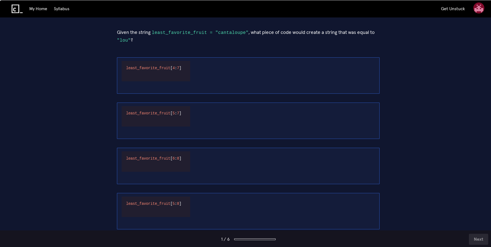
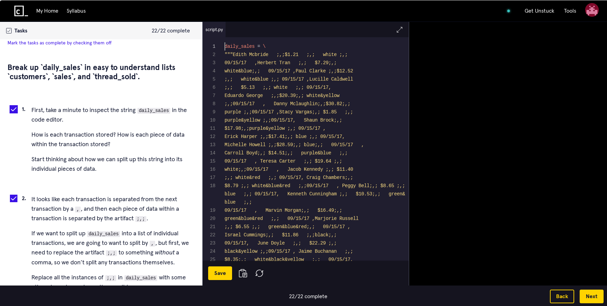
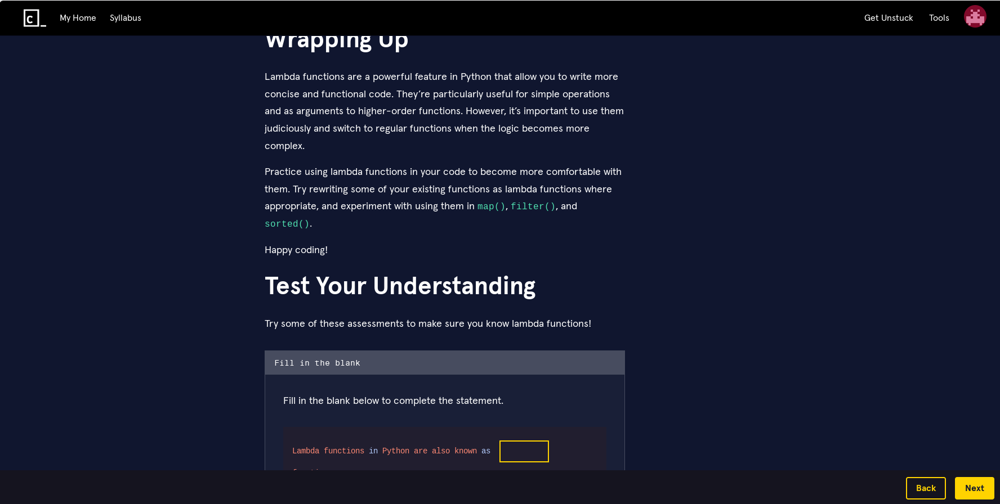
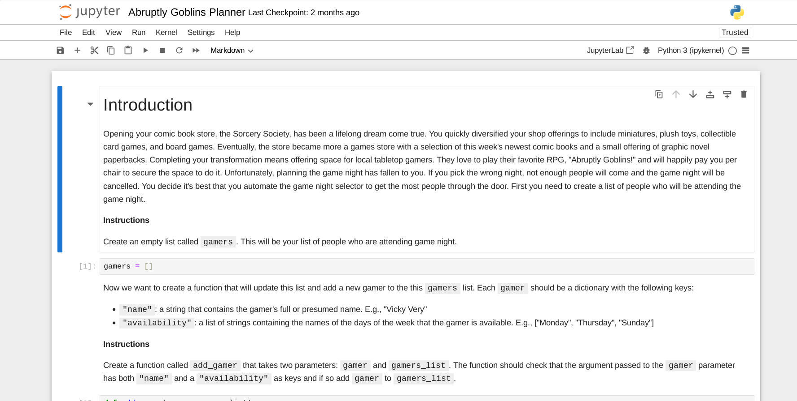
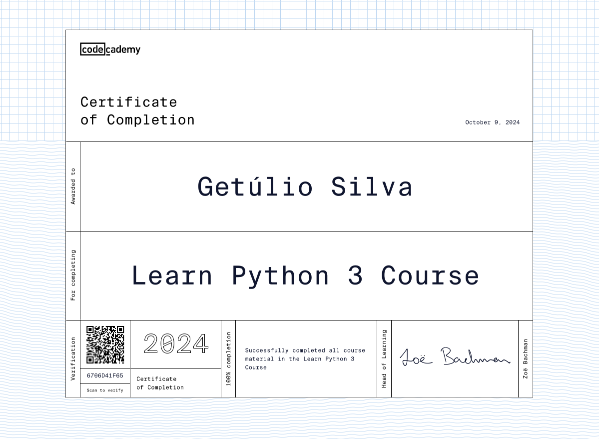

Minha avaliação do curso Learn Python 3 do Codecademy
Resumo
- Codecademy é um excelente site de cursos interativos de tecnologia
- Codecademy tem cursos gratuitos mas os melhores são pagos
- Assinar o Codecademy custa de US$143,88 a US$239,88
- Python é uma linguagem fácil e poderosa que pode te ajudar a ganhar muito dinheiro
- Learn Python 3 é um bom curso para aprender ou recordar conceitos básicos
- O site não é totalmente acessível e pode travar às vezes
- Você precisa se esforçar para alcançar um nível profissional de habilidade
- Pague pelo Codecademy se você prefere aprender fazendo, não quer procurar materiais e/ou tem pressa
- Existem outros materiais de aprendizado que são bons e gratuitos
Introdução
Codecademy é um site com vários cursos interativos de tecnologia. O foco principal é ensinar linguagens, técnicas de programação e habilidades pessoais para que você consiga entrar ou crescer em uma carreira tecnológica. O site oferece cursos sobre uma grande variedade de temas, desde linguagens como Python, JavaScript e Java, até cybersegurança, design e comunicação. O que diferencia o Codecademy de outros meios de aprendizado é o formato. A maior parte do tempo é gasta em uma página com três partes:
- na esquerda: o material de aprendizado e as instruções do exercício a ser feito
- no centro: um editor interativo que te permite escrever código-fonte e um botão para executar o código
- na direita: o resultado da execução do seu código
A maioria das lições é bem curta e direta, te ensinando algo significativo em pouco tempo. Você aprende um conceito, vê alguns exemplos e recebe uma tarefa no painel da esquerda. Você escreve o código no painel do centro para cumprir a tarefa, clica em Run e vê o resultado da sua criação no painel da direita. O sistema te informa imediatamente se o resultado está certo ou errado, e às vezes até informa qual erro você cometeu. Caso tenha errado, basta alterar o código e clicar em Run novamente, permitindo que você supere os obstáculos rapidamente. Após fazer a tarefa de forma correta, basta clicar em Next para avançar para a próxima lição. Repita isso várias vezes e você tem um curso do Codecademy.
Muito mais tempo é gasto aplicando o conceito ensinado, ao invés de observando uma explicação (como em aulas, vídeos e livros por exemplo). A cada lição concluída você sente uma pequena sensação de conquista que te dá vontade de fazer a próxima. Se em algum momento da sua vida, ao jogar um jogo, você dizia que ia parar de jogar quando terminasse a próxima fase, só para olhar o relógio e perceber que horas se passaram sem que você percebesse, você entende um pouco da sensação que tenho ao usar o Codecademy.
Infelizmente o site só está disponível em Inglês. Eles recomendam que você use um navegador de internet capaz de traduzir as páginas para outro idioma, como o Google Chrome. Apesar de existir um aplicativo móvel do Codecademy, ele não possui todas as funcionalidades, servindo apenas para revisar o que já foi aprendido. O site completo pode ser usado em celulares e tablets, mas podem existir cursos que te pedem para instalar programas que só funcionam em computadores com sistemas operacionais Windows, MacOS, Linux e talvez Chrome OS. Na minha opinião, o melhor jeito de fazer os cursos é usando um computador de mesa, com sistema operacional Linux e um ou mais monitores grandes.
Quanto custa o Codecademy?
Hora de correr para o Codecademy e começar a aprender, certo? Bem, apesar da grande oferta de cursos gratuitos, os melhores são pagos, como o Learn Python 3 que vou analisar mais adiante. Em dezembro de 2024, você pode contratar os seguintes planos:
- Para empresas:
- A partir de US$299 por ano, por pessoa.
- Para pessoas:
- Plano Plus: US$14,99 por mês (total de US$179,88 por ano), por pessoa, ou US$143,88 por ano (diferença de US$36 por ano comparando com o pagamento mensal), por pessoa. Opte por este se só os cursos te interessam
- Plano Pro: US$19,99 por mês (total de US$239,88 por ano), por pessoa, ou US$191,88 por ano (diferença de US$48 por ano comparando com o pagamento mensal), por pessoa. Opte por este se quiser usufruir de funcionalidades que podem te ajudar a ingressar ou avançar em uma carreira tecnológica
Sim, é muito dinheiro. Se você está procurando um novo trabalho, provavelmente não pode fazer gastos desnecessários. Esses preços pesam ainda mais em um país com moeda desvalorizada em relação ao dólar estadunidense. Mas não se preocupe, o site oferece uma série de descontos, como 35% para estudantes, 50% para quem recebe benefícios sociais nos EUA ou, para militares, profissionais que atendem emergências (como bombeiros e socorristas), profissionais da saúde ou professores, entre outros. Esses descontos podem deixar de existir e outros podem entrar em vigor. Também pode ser necessário fornecer algumas informações para provar que você faz parte do grupo beneficiado pelo desconto. Por isso sempre verifique quais se aplicam a você e quais são as condições.
Além dos descontos permanentes, frequentemente surgem promoções que oferecem os planos anuais pela metade do preço, que é quando recomendo que você faça a assinatura. Se ainda assim você não se convenceu do valor do Codecademy, ou não pode gastar o dinheiro, dê uma olhada no final deste texto, onde eu listo alternativas gratuitas de alta qualidade.
Porque aprender Python 3?
Python é uma linguagem de programação muito bem projetada, que evoluiu ao longo de muitos anos. Um programa em Python é semelhante a um texto comum em língua inglesa, o que torna a sua escrita e a sua leitura mais fáceis, especialmente para iniciantes. Ainda assim, não deixa de ser uma linguagem poderosa e ao mesmo tempo muito flexível. Você pode criar scripts simples para automatizar tarefas tediosas, desenvolver sistemas web complexos com Django, analisar conjuntos de dados com pandas, desenvolver jogos com Pygame e muito mais.
Se em algum momento você tiver alguma dúvida, é fácil encontrar informações e pessoas dispostas a te ajudar, seja na internet ou na vida real, porque Python é usada por muitas pessoas e organizações.
Falando de organizações, todas as que usam programas escritos em Python precisam de pessoas para desenvolver e manter os sistemas delas. Saber Python pode ser a porta de entrada para uma carreira na tecnologia e algumas vagas de trabalho podem te pagar muito bem, com salários anuais que superam os US$100.000 nos EUA. É importante ressaltar que não é fácil conseguir esses empregos, mas aprender Python é o começo da jornada que pode te levar até lá. Mesmo que só consiga trabalho em outros países (que quase sempre pagam menos), você provavelmente terá uma vida mais confortável que a maioria das pessoas.
Sobre o Learn Python 3 do Codecademy
O curso é voltado para iniciantes, e segundo o site, demora 23 horas para ser concluído. Eu sou graduado em Sistemas de Informação, logo tive exposição prévia aos conceitos. Não medi o tempo que gastei, mas imagino que tenha sido cerca de 30 horas. Isso porque me aprofundei muito mais do que o necessário para apenas concluir o curso. Se esse é o seu primeiro contato com programação, não se surpreenda se demorar 50 horas ou mais para concluir o curso de forma satisfatória. Se você já tem uma vasta experiência e fizer apenas as atividades principais, talvez termine tudo em apenas um dia ou dois.
Não se sinta mal se não conseguir avançar tão rápido quanto outras pessoas. Cada um de nós faz as coisas de um jeito diferente e, com prática suficiente, pode alcançar ou superar o nível dos nossos pares. O importante é aprender o máximo possível ao longo do processo, e para isso é importante não ter pressa, prestar atenção, fazer anotações se necessário e fazer as tarefas com a maior dedicação possível.
Aprender a programar é difícil para a maioria das pessoas. É um exercício constante de lidar com a frustração. Você vai sempre encontrar problemas inexplicáveis e muitas vezes vai ter que resolvê-los por conta própria. Não desista. Saber pesquisar, persistir e inventar soluções criativas são parte do processo de formação de qualquer pessoa que deseja programar bem.
Tendo explorado a parte mais emocional, o que você pode esperar do curso em termos de atividades? O curso é dividido em 13 módulos e cada módulo tem cerca de 6 atividades. Como escrevi na introdução, a maior parte do tempo é gasta em um tipo de atividade chamada Lesson, que consiste em repetir um ciclo de aprender conceito, fazer desafio, analisar resultado e ir para a próxima lição, cerca de 15 vezes. Mas existem várias outras atividades como:
- Quiz: questionários de múltipla escolha com questões variadas sobre as lições, incluindo conceitos, sintaxe (maneira correta de escrever código) e resultado da execução de programas. 
- Project: são versões maiores das lições normais, com a diferença de não existir verificação automática do resultado do seu trabalho, cabe a você fazer essa verificação. 
- Article: textos mais longos com pequenos exercícios e questões para testar a sua compreensão. 
- Informational: projetos maiores e mais complexos que usam Jupyter Notebooks (arquivos com anotações interativas). Nestas atividades te ensinam a instalar Python e Jupyter Notebook no seu computador. Talvez essas foram as melhores partes do curso para mim, por serem úteis e divertidas ao mesmo tempo. Elas também servem para acalmar os críticos do Codecademy, que afirmam que você nunca aprende a usar o conhecimento em um ambiente real. 
Alguns poucos vídeos também são incluídos entre as atividades. Essa diversidade de métodos de ensino manteve a minha atenção antes que eu pudesse ficar entediado,tornando a experiência mais agradável. Note que existem dois módulos opcionais chamados de Code Challenges. Você não precisa completar esses módulos para terminar o curso, mas recomendo fortemente que complete, para realmente testar seus novos conhecimentos. Além do mais, você (ou outra pessoa) está pagando caro pelo acesso ao site, então é melhor aproveitar cada pedacinho do curso para justificar o gasto, não é?
Considero o conteúdo desse curso bom e bastante completo para um primeiro contato com a linguagem, considerando a proposta do site. É necessário continuar com os seus estudos para atingir um nível de competência profissional, mas esse material te dá uma base sólida e ampla para se aprofundar.
Se encontrar um exercício difícil, você poderá usar os recursos de ajuda. Algumas atividades possuem dicas sobre as tarefas a serem feitas, assim você não vai sofrer desnecessariamente. Se ainda tiver dificuldade, é possível consultar as cheatsheets (pequenos resumos das lições), consultar os Docs (textos mais completos), assistir um vídeo com a solução (apenas em alguns exercícios), ou simplesmente ver a solução. Se mesmo esses recursos não forem satisfatórios, você pode trocar mensagens com outras pessoas que já concluíram ou estão fazendo o mesmo curso que você, no que chamam de community. Explorei pouco essa funcionalidade de comunidades, que se baseia no serviço Circle (fora do Codecademy). Achei a interface um pouco confusa, apesar de cheia de funcionalidades. Dê uma chance, talvez você acabe conhecendo pessoas legais. Por último, existem os assistentes de IA para te ajudar a resolver e explicar os exercícios, o que pode ser útil para algumas pessoas.
Ao terminar um módulo, você pode iniciar uma module practice, que é uma revisão dos conteúdos daquele módulo, para manter o conhecimento fresco na sua mente. Ao terminar todos os módulos é possível fazer practice sessions, que são revisões de todo o conteúdo do curso. Mas uma das maiores recompensas ao concluir o curso é o certificado:
Esse certificado não vai te garantir um emprego, mas pode ajudar. A maior utilidade para mim é o sentimento de conquista.
De volta ao tema de trabalho, assinar um dos planos Pro te dá acesso a alguns recursos que podem aumentar a sua empregabilidade, como cursos que te ensinam as habilidades necessárias para entrevistas de emprego, questões comumente usadas nessas entrevistas e assistentes baseados em IA que podem analisar seu currículo e simular entrevistas.
Pontos negativos
Mesmo gostando tanto da experiência do site, ele tem defeitos. A primeira grande omissão que notei foi o editor interativo não aceitar a entrada de dados, ou seja, você não pode executar um programa que te permite digitar alguma coisa no meio da execução e processar essa informação que foi digitada. Um exemplo seria um programa que pergunta qual é o seu nome, você digita o seu nome (vamos supor que seja Clara) e pressiona a tecla enter, e então o programa exibe uma mensagem como "Olá Clara". Este programa não pode ser usado dentro do ambiente interativo do Codecademy. Mesmo que essa limitação exista, o Learn Python 3 tem um artigo que ensina a fazer essa operação em um ambiente real. Para contornar esse problema você pode escrever os textos que quer inserir, diretamente nos programas, e usando essas variáveis, executar os programas sem interrupção.
Outra crítica importante que já mencionei, é que o ambiente interativo do Codecademy simplifica e automatiza algumas coisas para facilitar o aprendizado, situação muito diferente do mundo real, onde às vezes apenas conseguir instalar uma linguagem de programação pode ser desafiador. Apesar de considerar essas críticas exageradas, é verdade que os cursos não vão ensinar tudo que você precisa para usar as tecnologias em um contexto profissional. Você deve ter o interesse em aprender alguns detalhes por conta própria e, se perguntar de forma honesta se realmente consegue aplicar o que aprendeu, em um ambiente real. Se você tiver esse interesse, as informações disponíveis são mais do que suficientes.
O Codecademy é mais acessível do que muitos sites que conheço. Ainda assim, identifiquei alguns problemas. Temas escuros ("dark mode") são importantes para pessoas sensíveis à luminosidade e a presença deles tem que ser elogiada, assim como o modo de alto contraste. Infelizmente eu sofro com o problema oposto. Ao ler páginas com texto claro e fundo escuro, mesmo quando paro de olhar para a página, continuo vendo o texto na minha frente por alguns segundos, como se a imagem tivesse sido "queimada" na minha visão. A imagem abaixo mostra (de forma exagerada) o que vejo:

{kind=link}
Não fui diagnosticado, mas o que sinto corresponde à descrição do fenômeno chamado de palinopsia. Tentar usar temas escuros me causa mais fadiga do que o normal, diminuindo a minha produtividade. O Codecademy permite desativar o tema escuro. O problema é que o tema normal também é predominantemente escuro, como é possível ver nas capturas de tela que fiz acima. Não existe um tema totalmente claro, então se você tem os mesmos problemas que eu, leve isso em consideração. Outro possível problema de acessibilidade que encontrei foi no projeto Block Letters do módulo Hello World. Ele consiste na criação de ASCII art, que é basicamente fazer desenhos usando texto em um computador.
{kind=link}
O problema dessa atividade é que, para pessoas cegas ou com baixa visão, pode ser difícil entender ou criar esse tipo de arte, o que pode desencorajá-las logo no início do curso.
Outros pequenos incômodos foram travamentos que me obrigaram a recarregar a página, os atalhos de teclado que pararam de funcionar às vezes, alguns momentos de lentidão (o Codecademy precisa de uma boa conexão com a internet para funcionar) e a sensação de estar usando três sites diferentes dependendo da página que estava acessando. Por último um detalhe muito bobo, é a dificuldade de criar um certificado de conclusão de curso esteticamente agradável. É um pouco difícil fazer o certificado ficar centralizado e não cortar as bordas.
Vale a pena pagar pelo Codecademy?
Acho que pode valer ou não a pena nos seguintes casos:
- Você prefere aprender alguma coisa nova "fazendo" ao invés de assistir outra pessoa te ensinando por muito tempo, antes de aplicar o conhecimento. Se ao invés de um curso interativo, você prefere outros meios como aulas presenciais, vídeos ou livros, não vale a pena. Mas não deixe de experimentar o Codecademy, pode ser que mude de ideia.
- Você tem dificuldade de encontrar bons materiais de estudo ou se perde facilmente no meio do caminho e não consegue estudar até o fim. Você está procurando um programa de estudo completo e só quer terminar ele sem se distrair. Você ainda vai ter que se esforçar para manter o foco, mas considero o Codecademy uma ótima opção nesses casos. Já, se você gosta de selecionar cada elemento do seu programa de estudo, a ordem dos materiais e usar várias fontes diferentes, talvez o Codecademy não seja uma boa opção para você, pois é possível que a estrutura dos cursos pareça tediosa ou limitante.
- Você tem pressa e quer aprender ou recordar conceitos básicos sem se aprofundar muito, usando um único meio. Se você está procurando uma referência completa, com tudo o que você precisa saber sobre um assunto, ou uma referência mais "séria", com rigor acadêmico, o Codecademy não é uma boa opção para você.
A não ser que você tenha MUITO dinheiro, não recomendo que assine o Codecademy imediatamente. Primeiro faça um dos 593 cursos gratuitos como Learn HTML ou Learn JavaScript. Parte dos cursos só está disponível para assinantes, mas as partes principais são de graça. Não subestime a utilidade dos cursos gratuitos. Já precisei criar um programa usando a linguagem Ruby para fazer uma entrevista de emprego. O problema é que eu não sabia nada sobre a linguagem, mas fazendo as partes gratuitas do curso Learn Ruby, consegui aprender o suficiente para ficar entre os dez primeiros, contra centenas de outros candidatos. Se depois de terminar um curso gratuito, perceber que gostou do formato, observe o catálogo e veja se algum material pago te interessa. Se sim, inicie o teste gratuito de 7 dias e durante esse período faça o maior número possível de cursos que te interessarem. Se o material pago te agradar, assine por um mês, ou se a qualidade realmente te convencer, assine por um ano para economizar um pouco. Antes de assinar, não se esqueça de verificar as promoções e se você tem direito a algum desconto.
Outros recursos de aprendizado
Eu nem sempre tive condições de pagar pelo Codecademy, então entendo se este for o seu caso. Mas quando a vontade de aprender é grande, qualquer obstáculo pode ser superado. Felizmente existe uma infinidade de recursos de aprendizado de alta qualidade que não custam nada. A maioria está em inglês e não possui tradução. No futuro posso publicar outro texto só com referências em português, mas saiba que hoje, para trabalhar na tecnologia, aprender inglês se torna indispensável. Abaixo estão alguns recursos separados por categoria:
-
Livros - o humilde livro é um dos meios mais antigos de aprendizado. Com alta densidade de informação, escolher os livros certos pode te dar uma educação comparável às melhores universidades do mundo. Costumam ser caros, mas você pode aproveitar promoções, pedir como presente, comprar cópias usadas, emprestar e se tudo falhar, fazer o download de PDFs em sites como Anna's Archive e Library Genesis. Alguns bem avaliados são:
- Automate the Boring Stuff with Python de Al Sweigart - grátis!
- Python Crash Course de Eric Matthes.
- Fluent Python de Luciano Ramalho.
-
Cursos online - a experiência de cursar matérias nas universidades mais prestigiadas do mundo, sem ter que sair de casa e sem ter que gastar um centavo:
- HarvardX: CS50's Introduction to Programming with Python da Universidade de Harvard.
- Python Programming MOOC 2025 da Universidade de Helsinki.
- MITx: Introduction to Computer Science and Programming Using Python do Instituto de Tecnologia de Massachusetts.
-
Cursos interativos - sites semelhantes ao Codecademy mas com propostas diferentes:
- freeCodeCamp - totalmente gratuito e disponível em português. Um excelente projeto com materiais de altíssima qualidade. Parecido com o Codecademy mas menos refinado. Você vai ter que se esforçar muito para concluir os cursos, mas vai crescer muito no processo.
- The Odin Project - totalmente gratuito. Cursos muito completos focados em desenvolvimento web. O site frequentemente utiliza referências externas para te guiar. Se você não tem medo de um desafio e quer uma formação sólida, confira esse projeto.
- Scrimba - alguns cursos gratuitos. Este site é o que eu considero o futuro do conceito do Codecademy. O ensino é baseado em vídeos, mas enquanto uma pessoa explica o conteúdo no vídeo, as ações dela são reproduzidas em um editor interativo, como se alguém estivesse ao seu lado, digitando no seu computador enquanto te explica. Você pode ir e voltar ao longo do vídeo e ver as mudanças no código ou alterar os programas do jeito que você quiser. Definitivamente vale uma visita.
-
Tutoriais na internet - a maneira original de disseminar conhecimento através da internet, que já mudou a vida de bilhões de pessoas, inclusive a minha:
- O tutorial do Python - disponível em português! O tutorial "oficial" da linguagem. Você sempre vai fazer uma boa escolha se usar esta referência.
- W3Schools - um site polêmico que já teve alguns problemas mas melhorou muito. O que importa é que você aprenda e este site com certeza vai conseguir te ensinar.
- Real Python - assim como o W3Schools, frequentemente uso este site para esclarecer uma dúvida ou recordar algo rapidamente. E quase sempre consigo encontrar a resposta que estou procurando, de forma didática.
-
Vídeos no YouTube - uma maneira interessante de usar um site que você já conhece, para aprender. Estas são meras sugestões, faça sua própria busca e você vai encontrar milhares de opções:
- Python Tutorial for Beginners de TechWorld with Nana.
- Python for Beginners de freeCodeCamp.
- Python RIGHT NOW!! de NetworkChuck.